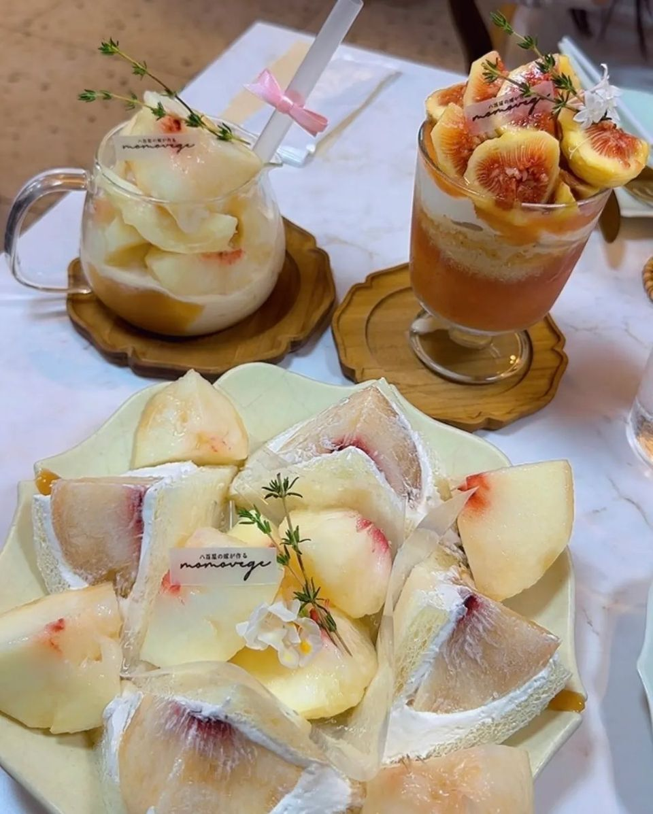
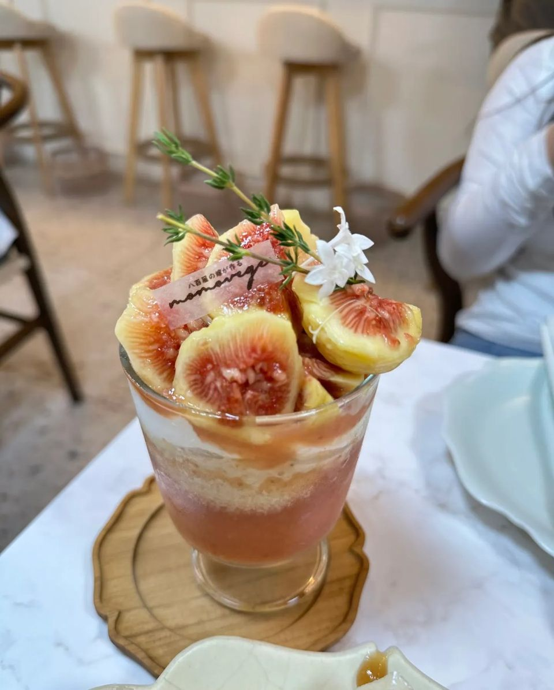
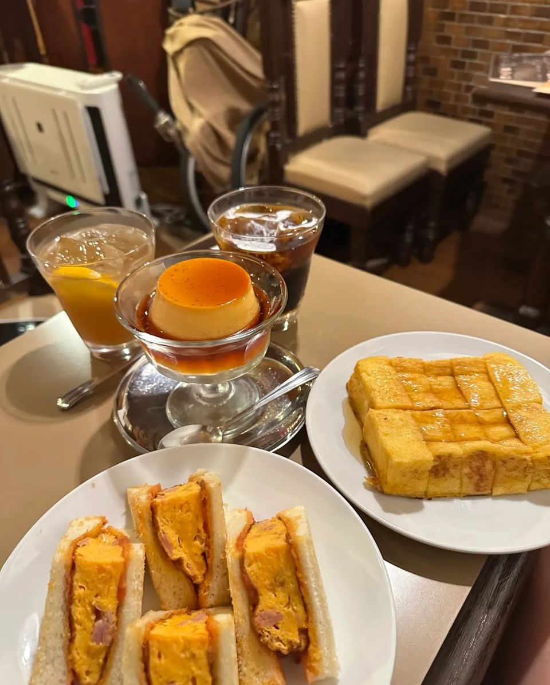
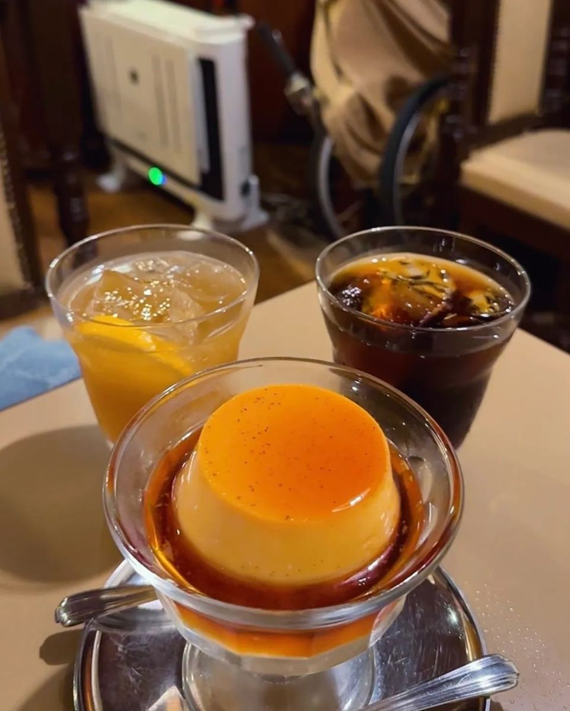
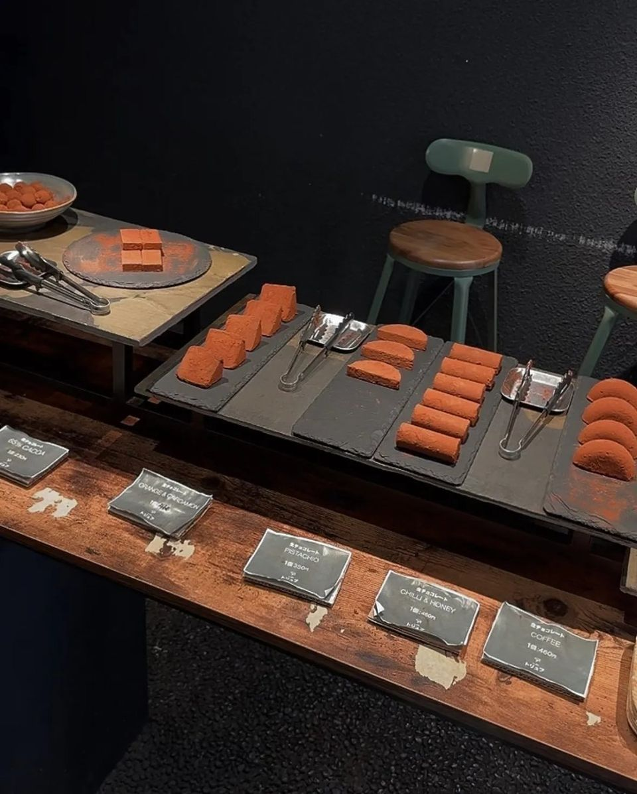
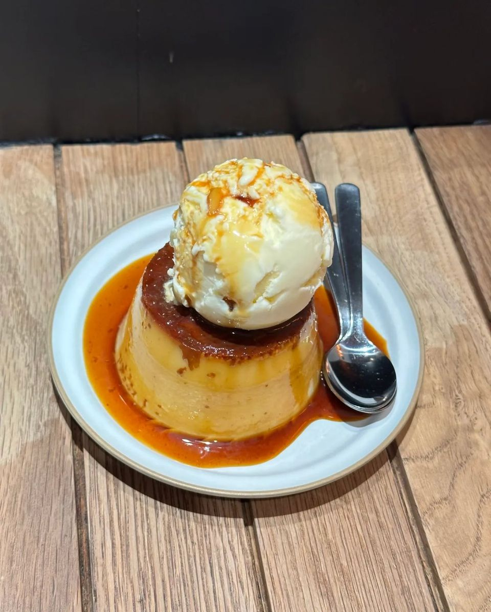
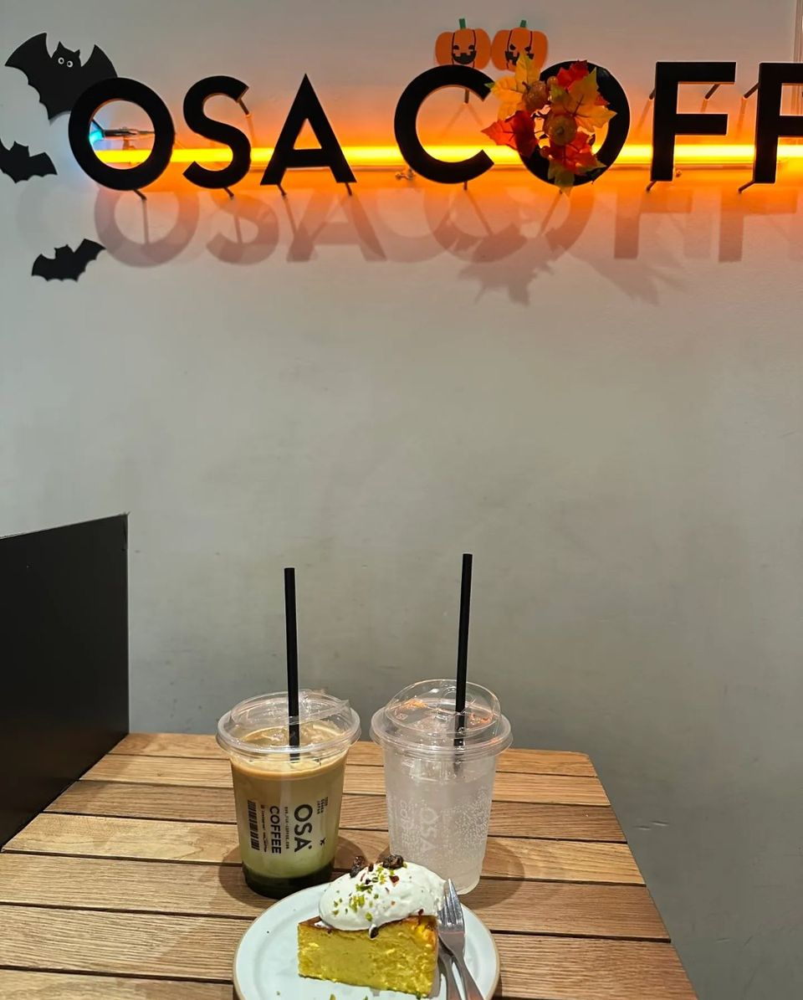

과일가게가 하는 momovege, 레트로 다방 아라비야 커피, Melt Chocolate, OSA COFFEE까지. 주소와 지도를 한 번에!
오사카 가면
사진도 맛도 다 챙기고 싶잖아요 ㅎㅎ 📸
제가 저장해 둔 감성 카페 4곳 공유해요!
주소·영업시간·지도는 글 아래 '가게 정보'에 다 모아 뒀어요 📍

복숭아가 접시 가득, 이게 과일가게 클라스 🍑
1. momovege (모모베지)
과일가게가 하는 카페라
복숭아, 무화과가 듬뿍!
비주얼 끝판왕이에요 ✨
- 정식 이름: 八百屋の嫁が作る momovege
- 오사카에 두 곳: 나카노시마점, 가시와라 본점

무화과 왕관 쓴 파르페 👑
2. 아라비야 커피 (アラビヤコーヒー)
도톤보리 근처 레트로 킷사텐(옛날 다방)이에요.
탱글한 푸딩이랑 두툼한 계란 샌드가 존맛!
- 위치: 에비스바시스지와 호젠지 사이
- 수요일은 쉬는 날이 있어요 (부정기)

레트로 다방 감성 그대로 ☕

탱글탱글, 숟가락으로 톡 🍮
3. Melt Chocolate (멜트 초콜릿)
눈앞에서 초콜릿을 올려 주는 게 포인트!
생초콜릿도 하나씩 골라 먹는 재미가 있어요.
- 더 자세한 후기는 블로그 '오사카 Melt Chocolate' 글에 있어요

생초콜릿 고르는 재미 🍫
눈앞에서 초콜릿 듬뿍 🤎
4. OSA COFFEE (오사 커피)
아이스크림 올린 꾸덕 푸딩이 시그니처예요.
- 나카자키초역에서 걸어서 3분
- 현금은 안 받아요 (카드·간편결제)

아이스크림 통째로, 이게 시그니처 🍨

할로윈 장식까지 귀여웠던 OSA 🎃
5. 총평
- 사진 맛집: momovege
- 레트로 감성: 아라비야 커피
- 초코 덕후: Melt Chocolate
- 푸딩 덕후: OSA COFFEE
가기 전에 아래 '구글 지도' 버튼으로
오늘 문 여는지 꼭 확인하세요!
가게 정보 한눈에 보기 · 5곳